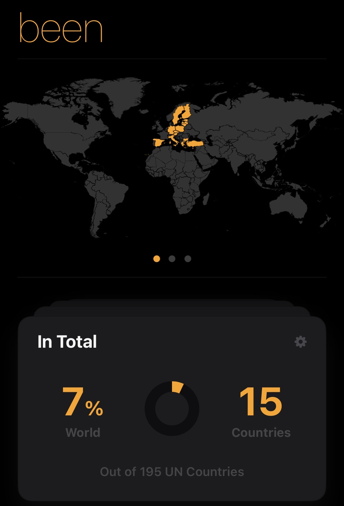

Tässä luettelo matkakohteistani. Päivitän sivua sen mukaan, kun käyn uusissa maissa.
Jos haluat pitää kirjaa omista matkoistasi ja maista, missä olet käynyt, suosittelen esimerkiksi "been" -sovellusta, mihin voi merkata omat matkat.

Näyttökuva minun "been" -sovelluksesta,